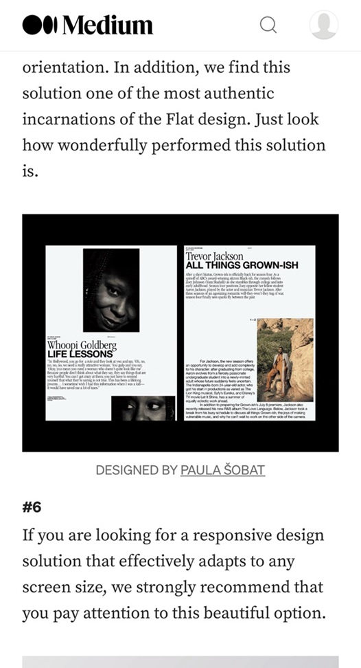

Visual Hierarchy
- Canva
- canva.com

- Visual hierarchy is the order in which humans process information on a page. It’s a system to prioritize elements so that they are easily understood. Without a visual hierarchy or design structure, users can be overwhelmed and as a result, fail to take anything in. That’s why it’s important to organize elements in a way the human eye can make sense of them.
Rule of Thirds
- UX Design Institute
- uxdesigninstitute.com

- The Rule of Thirds has its roots in art and photography as a way to create balanced, compelling images. By applying this principle to your UX/UI designs, you can create a sense of harmony and balance, making it easier for users to navigate through your interfaces.
White Space and Clean Design
- Medium
- medium.com
- 
- In design, white space is negative space. This is not an empty place, because it has its own goal. In particular, it balances the rest of the design, highlighting what is on the page (or screen). White space helps to focus the visual attention of the user. We hope that we have helped you figure out how to work with white space and now you can choose the most suitable option for your project.